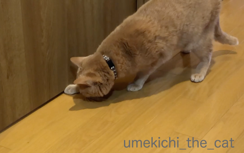
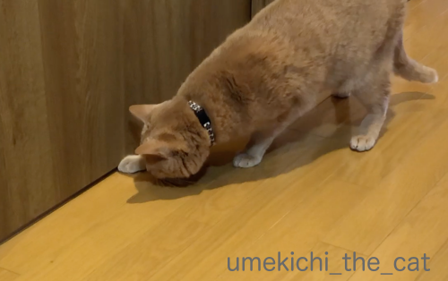

最後は天使が助けてくれる [梅吉]
梅吉のフードはカリカリの4キロ入りを買ってジップロックに小分けに。
しっかり封をして密閉容器に入れて保存しています。
封を開けたジップロックは冷蔵庫で保管。少しは鮮度を保てるかと思って。
詰め替えは梅吉がいるところでは出来ないので別室にこもってするのですが・・・
熱く見つめる扉の向こうでおかーさんが作業してます。
さらにじーっとみていると
キターッ！0(≧▽≦)0
カリカリがドアの下から出てきます。
今でこそだいぶ大人しく待っていられる様になりましたが（梅吉比）
ちょっと前まではドアが壊れるんじゃないかと思うくらい体当たりしてきて(⌒-⌒;
ドアも開けちゃうので背中で押さえつつ梅吉のギャン鳴きを聴きながらの作業は
慌てちゃってカリカリが飛び散り大変でした。
そこで！時々カリカリをパスして大人しくさせる作戦へ(๑˃̵ᴗ˂̵)و
![[猫]](https://blog.ss-blog.jp/_images_e/101.gif) なにみてるんや？わしはひっしやで
なにみてるんや？わしはひっしやで
扉の向こうで梅吉がどんな風に行動してるのか見たことがなかったのでおっとに撮影を頼みました＾＾
こんな風にあちこちキョロキョロ、ウロウロしてたんですね。

またキターッ！0(≧▽≦)0と思ったら勢い余ってカリカリをはじき返しちゃった様子。
何度も取ろうとおててを入れますがうまく行きません。
最後は天使がそっと羽で押し出してくれましたよ(^_－)☆
この一連の大騒ぎ、詰め替え作業が終わった後も続きます。
部屋にこもったカリカリのにおいに反応してわーわー鳴きながら走り回る梅吉。
封を切りたてのカリカリって特別美味しそうなにおいがするのかな？
梅吉がカリカリをキャッチする様子、2分18秒と長いのでお時間のあるときにでも。
梅吉の懇願する様な鳴き声が入ってます＾＾
おかーさんの（カリカリ）行くよー！とけけけけ笑いも聞こえますです(*>艸<)
 ↑ガブッと一押し↑
↑ガブッと一押し↑
くつしたにゃんさんがZEPETOを始めたので赤ジャに着替えて記念撮影＾＾
くつしたにゃんさんとはリュカさんを通じてお友達に。
なんと同じ学年で誕生日が一緒。
私の方が１時間くらいおねいさんですwww
シャキーン！
marimoさんとリュカさんがやっているのを見てうらやましくて・・・
やっと念願が叶いました！くつしたにゃんさん付き合ってくれてありがとう！
リュカさんともシャキーンッ！
marimoさんとemiさんもジャージで来てくれました！
赤ジャ女子軍団w
marimoさんのヘアバンド（？）がかわいい♡
2Kさんもお友達になってくださいました＾＾
なんと赤ジャwこうゆうノリ大好きです♪
お近づきの決めポーズw
赤ジャに着替える前のemiさんがセーラーカラーの可愛いお洋服を着てたので悪ノリ。
JK風に着替えてみました(⌒-⌒;
私がリアルでやったら石投げられます(*>艸<)
そしてそしてChatBleuさんもお友達になってくださいました！
次回のブログはツーショット載せちゃいますよ♡
私のコードは70YHGNでーす。
しっかり封をして密閉容器に入れて保存しています。
封を開けたジップロックは冷蔵庫で保管。少しは鮮度を保てるかと思って。
詰め替えは梅吉がいるところでは出来ないので別室にこもってするのですが・・・
熱く見つめる扉の向こうでおかーさんが作業してます。
さらにじーっとみていると
キターッ！0(≧▽≦)0
カリカリがドアの下から出てきます。
今でこそだいぶ大人しく待っていられる様になりましたが（梅吉比）
ちょっと前まではドアが壊れるんじゃないかと思うくらい体当たりしてきて(⌒-⌒;
ドアも開けちゃうので背中で押さえつつ梅吉のギャン鳴きを聴きながらの作業は
慌てちゃってカリカリが飛び散り大変でした。
そこで！時々カリカリをパスして大人しくさせる作戦へ(๑˃̵ᴗ˂̵)و
扉の向こうで梅吉がどんな風に行動してるのか見たことがなかったのでおっとに撮影を頼みました＾＾
こんな風にあちこちキョロキョロ、ウロウロしてたんですね。

またキターッ！0(≧▽≦)0と思ったら勢い余ってカリカリをはじき返しちゃった様子。
何度も取ろうとおててを入れますがうまく行きません。
最後は天使がそっと羽で押し出してくれましたよ(^_－)☆
この一連の大騒ぎ、詰め替え作業が終わった後も続きます。
部屋にこもったカリカリのにおいに反応してわーわー鳴きながら走り回る梅吉。
封を切りたてのカリカリって特別美味しそうなにおいがするのかな？
梅吉がカリカリをキャッチする様子、2分18秒と長いのでお時間のあるときにでも。
梅吉の懇願する様な鳴き声が入ってます＾＾
おかーさんの（カリカリ）行くよー！とけけけけ笑いも聞こえますです(*>艸<)
くつしたにゃんさんがZEPETOを始めたので赤ジャに着替えて記念撮影＾＾
くつしたにゃんさんとはリュカさんを通じてお友達に。
なんと同じ学年で誕生日が一緒。
私の方が１時間くらいおねいさんですwww
シャキーン！
marimoさんとリュカさんがやっているのを見てうらやましくて・・・
やっと念願が叶いました！くつしたにゃんさん付き合ってくれてありがとう！
リュカさんともシャキーンッ！
marimoさんとemiさんもジャージで来てくれました！
赤ジャ女子軍団w
marimoさんのヘアバンド（？）がかわいい♡
2Kさんもお友達になってくださいました＾＾
なんと赤ジャwこうゆうノリ大好きです♪
お近づきの決めポーズw
赤ジャに着替える前のemiさんがセーラーカラーの可愛いお洋服を着てたので悪ノリ。
JK風に着替えてみました(⌒-⌒;
私がリアルでやったら石投げられます(*>艸<)
そしてそしてChatBleuさんもお友達になってくださいました！
次回のブログはツーショット載せちゃいますよ♡
私のコードは70YHGNでーす。

カフェオレ色の梅吉

梅吉 2023年8月10日 永眠


梅吉と出会った譲渡会

犬猫の理由なき殺処分ゼロ
妄想広告
UMEKICHI 光

爆発的に早い！
時々攻撃的！
Thanks to Mr.Boss365
爆発的に早い！
時々攻撃的！
Thanks to Mr.Boss365

ジャージ なんかいい感じですよね（笑）
by (。・_・。)２ｋ (2019-02-04 01:03)
梅吉さんが元気で食いしん坊なのはとっても良いことですね。
ZEPETOみんな可愛い~。セーラー服のちぃさんを見たら男子生徒はイチコロねっ。
by zombiekong (2019-02-04 01:53)
同じカリカリでも封切りした時が
一番食いつきが良いです。
匂いに敏感ですね＾＾
by ぽちの輔 (2019-02-04 05:54)
梅吉くん、それだけ食欲旺盛ってことですね！いいことです〜。
開けたてのカリカリ、匂いがちがうんですかねー。
ZEPETOお友達になってくださってありがとうございまーす。
赤ジャージには乗り遅れたので(笑)やめました。
今は次にどのお洋服買おうかなーと物色中。
いいなーって思うと高いので悩んじゃいます。
by ChatBleu (2019-02-04 05:57)
そうかー。封を開けたときは新鮮な香りが
いっぱい撒き散らかされるんですね。
かなり必死なのが、可笑しくもあり、切なくもありますー(^_^;)
by よーちゃん (2019-02-04 07:20)
梅吉くん、カリカリ大好きなんですねぇ( ^ω^ )
うちはガールズがカリカリ好きで、カリカリ詰め替え作業は私の役目*\(^o^)/*
この時ばかりは呼ぶと素直に来るので、瓶に入れる時に
わざとこぼしてガールズのご機嫌をよくしてます=(^.^)=
が、私はかみさんに怒られますw
by ニッキー (2019-02-04 07:50)
おぉ～梅吉さん♪とっても楽しそうです(#^.^#)
今か今かと待つ姿は可愛いですが
作業している人は見れませんね（笑
旦那様が撮ってくれて良かったです♪
我が家も小分けにしますが・・・
別の部屋だと大暴れしそうなので
目の前で堂々と(;^_^A
ニャンコと違い、テーブルに上がれないので！
by きぃ (2019-02-04 08:21)
赤ジャもJK風も、カッケーです♪
カリカリの封切りでこんなに喜んでくれるなんて、やっぱり開けたて
は美味しいんですね。
by nachic (2019-02-04 09:03)
梅吉さんにはカリカリの詰め替え作業がわかるんですね！
耳だけじゃなくてやはり猫は鼻もいいのですね。
赤ジャージ、つられてみんなお着替えしてくれたので軍団化しましたね(笑
友達の輪が広がっていきますね(^^
2kさんとの決めポーズ、Boss365さんによれば、ガキデカの「死刑」のポーズ
らしいですよ・・・私はガキデカよくわからないですけど確かにググったら
このポーズしてました。
by marimo (2019-02-04 10:42)
おはようございます。
梅吉君の待機風景！！最高！！
なぜ？ニャンズ小さく低く構えるのか？不思議です。
パス作戦、手の動きが可愛い！！拾い癖つきそうですが、梅吉君いい反応してます。
小生猫、トイレ前で待機するので・・・
トイレットペーパーを下から出し、パンチ・戯れて遊びます。
ZEPETO！！いい感じで増殖中です。
シャキーンポーズ！！カッケーです（笑）
セーラーカラー！！危ない感じ？危険な香り？匂いかな？（笑）
どこまで行くのか？楽しみ！？(=^･ｪ･^=)
by Boss365 (2019-02-04 11:14)
必死な梅吉くん可愛いですなぁ(*^^*)で、羽で押し出した天使って誰？(笑)
by palpal (2019-02-04 14:52)
我が家もカリカリ出す時は当然締め出しますが、ドアの外ではヘソ天で高速クネクネして待ってます(^▽^;)
梅吉さん、楽しそう♪
これをやれば早食い防止になるかな・・・。
ZEPETOさんのポーズ、かっこいい～^^
by ゆきち (2019-02-04 15:02)
梅吉さんの時々カメラ目線が良いですね〜
カリカリが大好きな様子が伺えます（笑）
羽の天使はちぃさんでしょう。
向こうの部屋から、楽しんでいる様子、小さな笑い声？
ちぃさんZEPETOでセーラー服まで（笑）
若返りますね〜
by kiki (2019-02-04 15:44)
新しいフードが届くたびに繰り返される光景なのかな？
扉の隙間からカリカリがでてくるなんて、興奮しちゃうよね。
何より締め出されてしまうのがお猫様的には許せないｗ
梅吉くんの鳴き声、可愛いのね。ちぃさんの笑い声も！(≧▽≦)
ZEPETO。赤ジャ女子軍団にやっと入れた♪
お友達が増えると撮れる写真が増えて楽しいね。
ちぃさんのJK可愛い！この写真見て私は80年代風で行こうと
ずりずりスカート探したけどなかった～ｗ
by emi (2019-02-04 15:49)
節分の鬼役みたいになことは、これだったのね！(笑)
梅吉くん、あけたてのカリカリ食べられて良かったね〜^^
ほんっと、袋をあけた瞬間の反応はすごいですよね。
姿が見えなくてもギャーギャーいって飛んできます(笑)
おいしいのかねえ。あけたてｗｗ
あわてて瓶や小分け袋に入れるとこぼれます。同じ同じ^^
お！セーラー服買いましたね^^
わたし、バレンタインの時はセーラー服姿になるわ!
あこがれのあの人にチョコを・・・なんて妄想してみたいｗｗ
卒業式のころも、第２ボタン・・・って、いまどき、第２ボタンくださいなんていう文化は残ってるのだろうか？
by リュカ (2019-02-04 17:49)
梅吉さん、一生懸命ですね。
あぉ～ーーとけけけけ声聞きました！
新しい袋を開けたときの匂いはたまらないみたいですね＾＾
ZEPETOポーズ決まってます。楽しそう～＾＾
by sana (2019-02-04 18:24)
梅吉さん、カリカリが出てくるのを必死に待っていますね！
追いかけるスピードもさすがです(^^)
by ma2ma2 (2019-02-04 19:41)
扉の隙間にチョイチョイする姿が可愛い♪
ZEPETOさんポーズ、決まってますね～。
みんな仲よさそう。^^)
by yes_hama (2019-02-04 21:04)
ボリューム最大にして聴きました。
良かった。
一番最後の写真？がいいな＾＾
by riverwalk (2019-02-04 21:47)
こんばんわ＾＾
ZEPETO フォローさせていただきました。
よろしくお願いしますm(_ _)m
by てんてん (2019-02-04 23:11)
わたしだったらきっと、わざと何粒も
転がしてしまうかもしれません・・・（￣∀￣;
うちのも、転がした瞬間のキャッチはすごいですよ！
ちはやふる顔負け！（←知らないですが・・・^^;）
こういうの、旦那様が撮ってくださるからいいですね^^（愛だ♡）
わたしの中学の学年カラーが緑で、ジャージはまさにイモムシ色でした・・・
エンジが羨ましくて・・・
by Ja-Kou66 (2019-02-04 23:46)
梅吉さん、懇願にゃあ～～！かわいいにゃあ～～～^^
by ニコニコファイト (2019-02-05 06:42)
おはようございます。
「サルナシ」情報ありがとです。検索！！キウイにそっくり？似ていますね！！
サルナシも栄養豊富みたいです。ビタミンCがレモンの約１０倍？ビックリです。
サルナシを食べた事は無いですが、山中・森で見かけた事あります。
小生が見たのは、かなり小粒な感じで、食べれるサイズでは無かったですが・・・
有益情報！！ありがとうです！？(=^･ｪ･^=)
by Boss365 (2019-02-05 11:39)
赤ジャー軍団参上！！シャキーン！のポーズも決まってますね(^^)b仲間入り嬉しい♪
これだと年齢気にせず好きに着替えられるから楽しい〜(≧∇≦)♪みんなで着ぐるみとかもいいな〜
当分スクラッチでぽちぽち頑張ります！！
梅吉さんもやはりフード開けたてには反応強し！
皆さん小分けにして保管してらっしゃるのですね、そうなんだ！(°_°)
ウチはそのままなんだけど、最近特にお皿に入っててもフードを出してフードカップから注いだカリカリを食べたいらしく…沢山入っててもじーっと入れるまで待ってます…こっちが根負けして入れちゃうんだな (T-T)フェイクで3粒だけ入れるとやった♪って感じで食べるという…そこがネコだよね笑
by くつしたにゃん (2019-02-05 16:38)
丸い体制で待ち構える梅吉さんがかわいいです！
そうか～別部屋準備じゃないとやられてしまうんですね。
さすが敏感！
by ふにゃいの (2019-02-05 23:09)
扉越しのナイスキャッチ、さすが梅吉さん！
by ryang (2019-02-06 00:57)
2kさん＞
中高生の時は学ジャ嫌いでしたけど
今はなかなか良いもんだなぁって思ってます(*>艸<)
みなさんそれぞれにお似合いだしw
zombiekongさん＞
食欲、具合が悪くなった時のバロメーターがあって良いですよね！
梅吉がご飯食べなかったのはうちに来て２ヶ月目くらいだったかな。
急性腸炎になった時の二日間のみ。
（一週間くらい食が進まないかもねという先生の予想は覆しましたよ）
去勢手術の麻酔が覚めた後もばくばく食べてましたし(⌒-⌒;
ご飯食べなくなったら飼い主真っ青ですw
セーラー服、同級生にはウケが悪そうな女子ではないでしょうか。
かわりにおっさんが群がってきそうですw(←自分で言うかっ！）
ぽちの輔さん＞
カリカリも鮮度が命なのでしょうね＾＾
実は開封時私も必ず一個食べてますw
いや、好きなわけじゃ無いんですよ・・・(⌒-⌒;
ChatBleuさん＞
そうなんですよー。梅吉は食が極太で(*>艸<)
カリカリを切り替えるときもいきなり全部変えてOKですw
（普通は少しずつ新しいのを混ぜて、なんて言いますよね）
薬が必要な子なんですが薬を混ぜても全然気にしないので
とっても助かってます＾＾
そんな食いしん坊なので開けたての美味しそうな匂いのカリカリには
特に反応しちゃうんでしょうか(⌒-⌒;
ZEPETO、リニューアルしてコインがたまりやすくなりましたよね＾＾
広告をちまちま見ながらコイン貯めて可愛いお洋服買います！！
よーちゃん＞
フードの袋はちょっと膨らんでるんですが
鮮度を保つためのなんちゃらガスでも入っているのでしょうか。
そのせいか開けたては私も「あらおいしそう」って思っちゃいます(*>艸<)
事実一個食べてますし！（お毒味役w）
哀れを誘うのは演技なんですよ！演技！！
この時もご飯食べた後でお腹すいてなんかいませーん。
かわいそうなわしを演じるの得意なんです(≧▽≦)
ニッキーさん＞
ニッキーさんちではカリカリ詰め替えも
大切なコミュニケーションの機会なんですね＾＾
盛大にこぼして交流を深めてくださいませ(^_－)☆
あとでご飯から差し引けばオッケーですw
きぃさん＞
じーっと扉を見つめているんだと思ってたので
ウロウロしているのが意外でしたw
子供時代のドアにアタックしている動画も
取っておけばよかったと後悔してます。
でも当時は私も必死でそんな気にならなかったなぁ・・・（ﾄｵｲﾒ：：
わんこ、高いところに上がってこないというのは良いですよね！
飼い主の行動が広がります。
うちは何をするにも制限が付きまくりですwww
nachicさん＞
アバターですのでカッケーポースも決まりますw
リアルがしたら腰や方がグキッとなりそうですよ(⌒-⌒;
カリカリの詰め替え作業は始まる気配を察知するとそばから離れないので
まず部屋に一人でこもるのが大変です。
食いしん坊だから多めに食べさせてあげたいんですが
そうもいかない〜(-_-メ)
marimoさん＞
詰め替え作業は「やろう！」と思っただけで察知されますw
動物的カン！？
後をついて離れなくなるので振り切って部屋に一人こもるのが大変です。
ガキデカは５歳上の兄の漫画見てましたから知ってます。
こまわりくんの「死刑っ！」（笑）
何か失敗した人にはあのポーズで「死刑っ！」と指さすのが
子供の頃のブームでしたwww
もしかして「ぐわしっ」もご存知ない！？
Boss365さん＞
カリカリといえども「獲物」なのでしょうか＾＾
獲物に気づかれない様に己が見えない様に低く小さく！
トイレの扉前でのトイレットペーパー攻防、我が家でもありますよー。
でも梅吉は扉を閉めるのがお気に召さないのでドアは開けてあります。
なので私は一人の時はトイレのドア閉めないんですよ(*>艸<)
セーラー服、中高とブレザーだったので一度着てみたかったんですよね＾＾
できればルーソー希望だったのですが今では時代の遺物なのでしょうね。
ワードローブリストにありませんでした；；
セーラー服、リアルを当てはめると怪しいとも言えるかもしれませんw
サルナシ、キウイから酸味を抜いた感じです。
北海道の人は果実酒にしたりするんですよ＾＾
大きさは小さめのプチトマトくらいかなぁ。
palpalさん＞
うちには梅吉を見守る年季の入った天使がいるんですよ(*>艸<)
天使は年取らないから年季だけが嵩んで行きますwww
ゆきちさん＞
こてつくんはドアに体当たりするんじゃないかと思ってました(⌒-⌒;
高速クネクネ、期待が高まるほど早くなりそうですね(≧▽≦)
そういえばうちはヘソ天クネクネってしないなぁ。
ちなみに詰め替え作業は梅吉の空腹時はやめてます。
お腹が空いている時（いつもですが）すると家が壊れるくらい
暴れるんじゃないかと予想・・・ (-_-メ)
ZEPETOなかなか楽しいポーズが揃ってます♪
kikiさん＞
「さつえいしてるんやな」とでも思ってるんでしょうか(*>艸<)
カメラを向けると時々顔を作る様になりましたw
大好きなカリカリをいい匂いを振りまきながら小分けしているのに
「我慢しなさい」はとても出来なくて・・・
どうせならとドアの下から転がして楽しむ事にしました＾＾
もちろんいつものご飯の量からちゃんと差し引いてますよ。
姿は見えませんがドアの向こうで梅吉の困っている姿を想像して
「けけけけっ！」でしたー0(≧▽≦)0
emiさん＞
そうなの＾＾フードの小分け作業のたびに繰り返される光景ですw
フードが届いた時もちょっとした騒ぎにもなりますが・・・
匂いなんてしないはずなのに
フードの袋を見ただけですっ飛んできてかじってしまうので大変です。
穴を開けられてしまったことも(-_-メ)
梅吉の声かわいいでしょ♪
私の経験から言うとオスにゃんの方が可愛い声の子が多いかな、と。
メスにゃんはわりと野太い声の子が多い気がします。
わたしの「けけけけっ！」は楽しそうでしょー。
みんなで赤ジャ、楽しかったね。
今日はemiさんの真似しちゃった0(≧▽≦)0
80年代風スカートいいねー！スケバン風？(*>艸<)
スケバンって今でも通じる言葉かしら？彼女らのファッションは？？
昔のトンデモ流行で笑われる対象かなwww
リュカさん＞
実はフードが届いてダンンボールを開けた瞬間からすごいのw
においなんてしないはずなんだけど食いついてきて
袋を噛み切られたことも何度かあります(-_-メ)
開けたては酸化してなくて美味しいのかしらねぇ・・・
私は届いたフードは一個食べてみるんだけど
時間が経ったヤツとの違いがわからないw
第二ボタンは詰襟って感じがするかなぁ。
ブレザーでも第二ボタンなのかしらねぇ・・・
ちなみにボタンはもらったことないです！
バレンタインは「銀座高級クラブのお姉さん風」で
いこうかと思っているところです（なんでだw）
セーラーは長いずりずりスカートが欲しいな。
sanaさん＞
周りを気にしながらも一心にドアを見つめてますよね！
かわいいやっちゃ〜0(≧▽≦)0
開けたてのフードは確かに良い匂いがするかもです。
ジップロックに詰め替えても最後の方になると
多少酸化するのかちょっと気になる匂いに変わってます。
梅吉は気にしてませんけど・・・
少量パックをたくさん買うことも考えましたが置き場所に困るという＞＜
ma2ma2さん＞
逃さずキャッチ！食欲大魔王は偉大です0(≧▽≦)0
yes_hamaさん＞
お手手、器用な様でいてカリカリを押し込んじゃうんですよねー。
必死で勢いが付き過ぎてるんでしょうかw
ZEPETOだとリアルができないポーズもバッチリですよ＾＾
riverwalkさん＞
ケケケケ笑いも聞かれちゃいましたかw
消そうかと思ったのですが梅吉の鳴き声を入れたかったので
そのまま残してみました＾＾
てんてんさん＞
こちらこそよろしくお願い致しますm(_ _)m
明日アップする記事ではツーショットでーす＾＾
by ちぃ (2019-02-06 15:48)
ちぃさん こんにちは
ほんとうにカリカリが大好きなのですね
喜んでくれる食べ物があるのは嬉しいことでしょう。
by SORI (2019-02-06 16:11)
Ja-Kou66さん＞
わざと何粒も・・・
うちはあげただけ食べちゃうのでそれはとても危険ですw
ちはやふる、私も見たことありません・・・
映画にもなってる様ですが見るなら漫画だなと思ってますよ＾＾
学ジャ、芋虫色でしたかー0(≧▽≦)0
全国的にどこの学校もエンジ、芋虫色、青（決してブルーではないw）
の三色を学年ごとに着回すパターンでしょうか。
中・高、芋虫色には当たらずにすみました！
ニコニコファイトさん＞
お願いにゃ〜なんですよ！！
あそんでにゃ〜！！！！の時はお腹から野太い声出すのに
おねだりの時はちょっと情けない可愛い声を出す演技派の梅吉ですw
くつしたにゃんさん＞
赤ジャに着替えてくれてありがとう！でも試着してたなんてwww
ZEPETOのワードローブ、どうせなら普段自分が絶対着ない様な服を
って思うんだけどファンシーな服はなかなか着れないおばちゃんです(*>艸<)
フェイクの３粒作戦・・・先代猫がそうだったのでわかります！
今は入れたら速攻完食なのでそんな技は忘れてましたけどー。
フードの小分け、うちは大袋のまま置いておくと大変なことになります(-_-メ)
小分けは「隠す」意味もあるのです。
ふにゃいのさん＞
小さく丸くなるのはまさに獲物を狙う体制でしょうか＾＾
そんな事したことないくせに♡
梅吉の目の前で詰め替え作業をするのは
台風の中で金箔を移し替える作業の如し（なんだこの例えw）です。
全てなくなってしまうー。
ryangさん＞
食いしん坊の技が炸裂です！
まだまだ野性は残っている様ですよ＾＾
SORIさん＞
カリカリでもウェットでも梅吉は食べ物が大好きで・・・(⌒-⌒;
つねにがっつき気味ですけど「食べなくて心配」が無い分
良いかなと思う様にしています＾＾
お薬食べさせるのも楽チンですよ♪
by ちぃ (2019-02-06 16:30)
いつの間にか、ブログが進化！？ ＾＾
by KENT0mg (2019-02-06 18:52)
KENT0mgさん＞
そうです！ブログも自信も進化し続けるおばちゃんです0(≧▽≦)0
by ちぃ (2019-02-07 15:53)